| [ Team LiB ] |
|
6.1 IntroductionConsider the standard feedback block diagram shown in Figure 6-1, where disturbance inputs have been neglected. Transfer functions (and block diagrams) are used to analyze the behavior of control systems, because the algebraic expressions are easy to manipulate. Figure 6-1. Feedback control block diagram.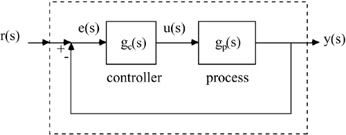 We noted in Chapter 5 that the closed-loop transfer function could be used to determine, for example, the range of controller gains that assure closed-loop stability. PID Controller FormsPID controller algorithms were developed in Chapter 5. Here we provide a concise review of the algorithms in common use. P-Only ControlThe proportional only algorithm is 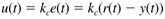 which has the following transfer function relationship between error and controller output: 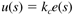 PI-ControlThe PI algorithm is 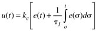 which has the following transfer function relationship between error and controller output: 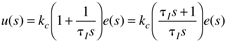 PID ControlThe ideal PID algorithm is 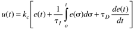 which has the following transfer function relationship between error and controller output: 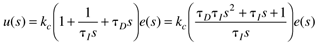 In practice it is impossible to perfectly differentiate the error signal, so the following Laplace transfer function approximations are often used for "real" PID control (where a = 0.1 is common): 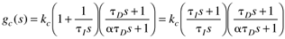 or 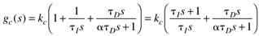 A problem with taking the derivative of the error is that step setpoint changes cause the derivative to become unbounded and result in a "spike" in the manipulated variable action. In most practical PID controllers, then, the derivative of the measured process output is used. 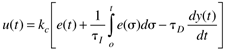 The transfer function representation is 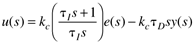 which is usually implemented in the form of 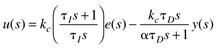 where the measured process output has been "filtered" to minimize noise problems. |
| [ Team LiB ] |
|